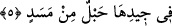

Hepsi senin yoluna diken döküyorlardı.
“Odun hamalı olarak;” Arapçada ‘Hatab’ Kâmûs’un beyân ettiği üzere, ateşi yakıp
tutuşturmak için hazırlanmış odun parçası demektir.
Bu âyette “Hammâle” kelimesinin üstün okunması, kınama ve hakâret içindir. Buna
göre burada sanki, “Ben kınarım o odun hamalını” denmiş oluyor. Zemahşerî der ki:
“Ben bu kırâati güzel buluyorum. Allah Teâlâ, Rasûlullah Efendimiz’i, Ümmü Cemîl’i
kınamayı istediği en güzel sıfatla zikrederek hoşnûd etmiştir.”
Bâzı âlimlere göre ise, “Hammâle” kelimesi hâl olduğu için mansûbdur. Buna göre
“Odun hamalı” terkîbi, gerçek anlamda izâfet olmuş olmaz. Çünkü maksad, Ümmü
Cemîl’in kıyâmet günü zakkûm, darî‘ gibi ağaçlardan odun demetleri taşıyacağını
ifâdedir. Boynunda ise ateşten zincirlerden bükülmüş bir ip olacaktır. Ümmü Cemîl,
tıpkı her günahkâr gibi, cürmünü işlerkenki hâline göre azâb edilecektir.
Katâde’den gelen bir rivâyette ifâde edildiği üzere, Ümmü Cemîl onca zenginliğine
rağmen, çok cimri olduğu için sırtında odun taşırdı. İşte o cimriliğinden dolayı
ayıplanmıştır. Bu durumda “Hammâle” kelimesinin mansûb oluşu sırf hakâret içindir.
Bir diğer rivâyete göre o, insanlar arasında söz taşır bozgunculuk yapardı. Sanki
aralarında odun taşır, kavgayı alevler, kötülük yayardı.
“Odun taşımak”, söz taşımaktan ibârettir ki bu sebeple düşmanlık ateşi iki kimse
arasında daha da artar.
Kavga iki kimse arasında yanmış bir ateştir,
Bedbaht gammaz ise odun taşıyıcıdır.
Sonra o ikisi barışır, anlaşırlar,
Gammaz da tâlihsiz ve rezil bir hâlde arada kalır.
İki kişi arasındaki ateşi alevlendirmek,
Kendisi de arada kalarak yanmak, akıl işi değildir.”
5. Boynunda hurma lifinden bükülmüş bir ip olduğu hâlde.
“Boynunda da bükülmüş bir ip olduğu halde.” Âyetteki “cîd”, Kâmûs’un beyânına
göre; boyun, boynun gerdanlık takılan kısmı veya boynun ön kısmı demektir.
“Mesed”, ana maddesi ister lif, ister deri, ister başka bir şey olsun, kuvvetlice
bükülmüş ip demektir. Nitekim kelimenin “sımsıkı bükülmüş ip” mânâsına geldiğini,
“Dâbbetün memsûde: sımsıkı bağlanmış hayvan” tâbirinden de anlamak mümkündür.
Buna göre âyetin mânâsı şöyle olur: “Ümmü Cemîl’in boynunda sımsıkı bükülmüş bir
ip olacaktır. Ve o bu diken demetini tıpkı oduncuların yaptıkları gibi boynuna
bağlayarak taşıyacaktır.” Bu ifâdelerin kullanılması, onu, basit oduncu kadınlara